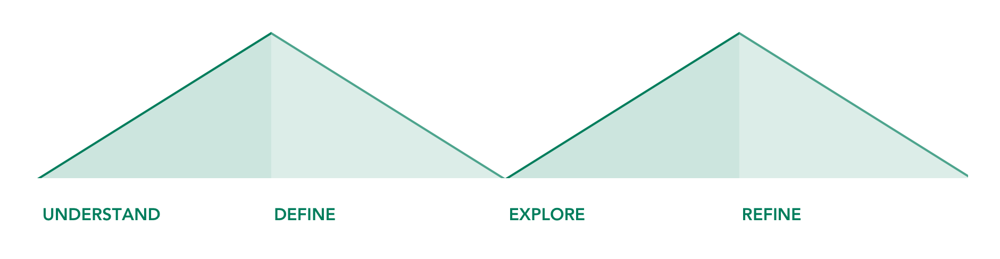
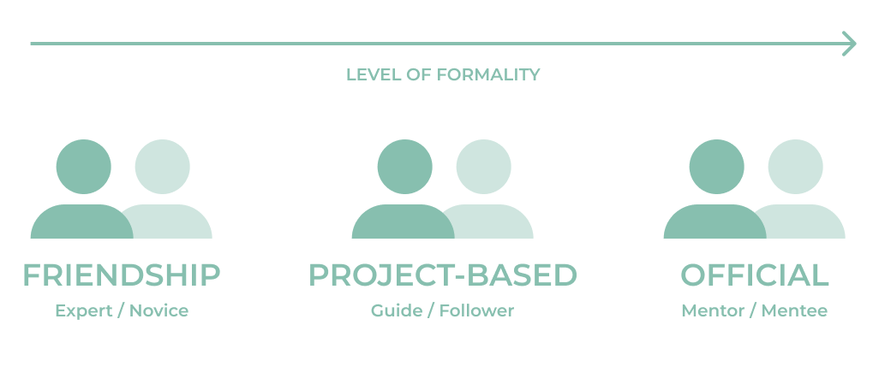
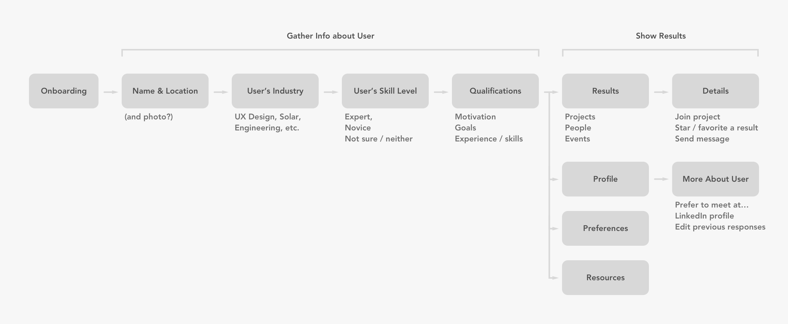
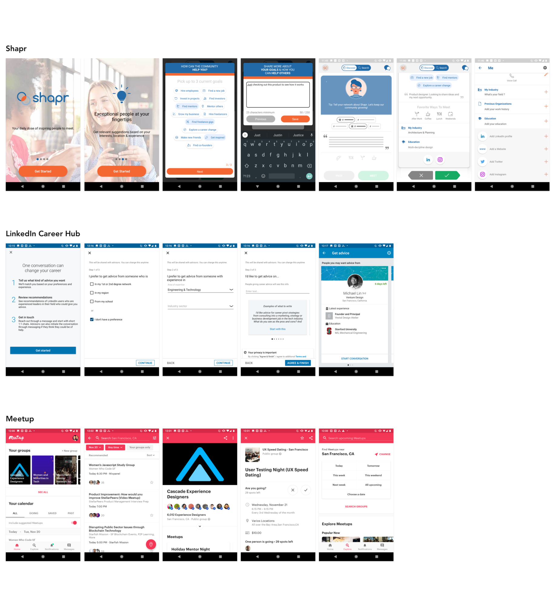
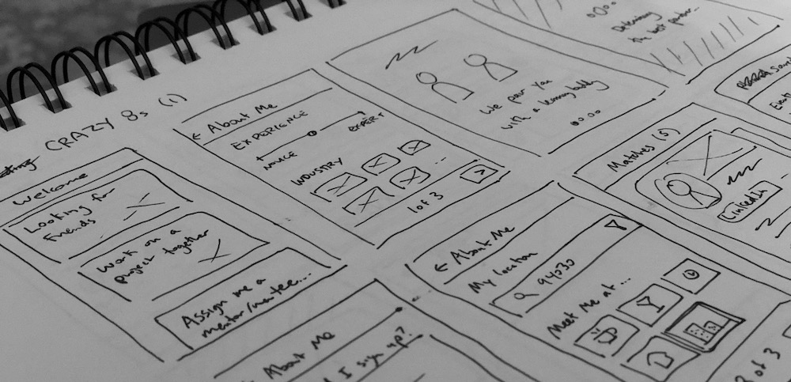
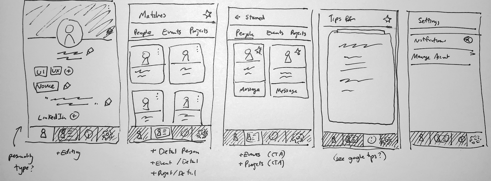
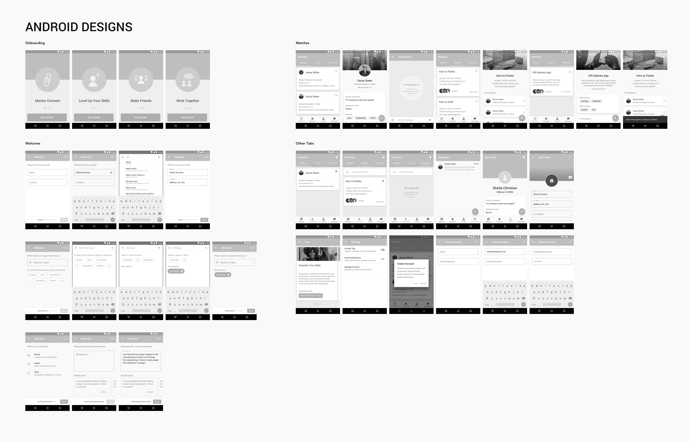
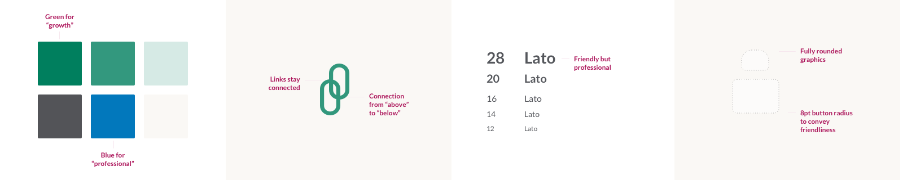
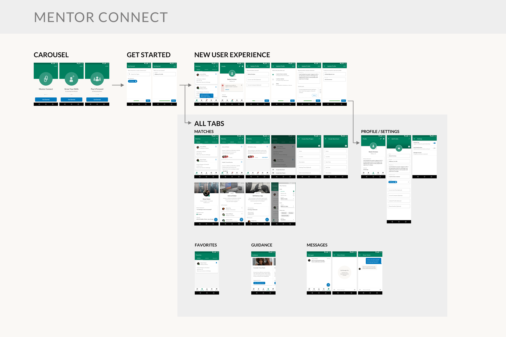

Mentor Connect
Individual design challenge
My design prompt for this challenge was:
Mentoring can be a great way to share knowledge and help someone be successful in their personal or professional life. But many potential mentors are often too busy to commit to regular meetings, or they have a hard time connecting with people seeking help. Design an experience where prospective mentors and mentees can be matched, based on similar interests, location, and availability.
Project plan
I like to follow a user-centered design process. First, I try to understand a problem by learning as much as I can about the topic in the available time. Then, I narrow in on a specific area and re-define the problem. I go wide again while exploring ideas, and then narrow in on a specific solution that I can hand off to developers. Ideally, I would have enough resources to keep iterating on my design in the refine phase to the point that I‘m pretty confident that the design solves the problem.
Understand
I started by learning more about mentorship. I read materials online. I found articles about how to find an effective mentor, checked Wikipedia for an overview of different types of mentorship, and looked for what other types of mentoring tools exist (including options available from major sites like Facebook, LinkedIn, and Meetup). One theme from this research was that successful mentoring relationships rarely start with a direct request for mentorship from a stranger – they usually start much more organically.
I also conducted four interviews with people who had had experience with mentoring, either as a mentor, as a mentee, or both. I focused on how mentors and mentees start their relationship, and asked my participants about their professional experiences with mentorship. From my interviews, I learned that mentorship can be a fuzzy concept, which might refer specifically to an assigned mentor, or to any relationship in which one person learns from another.

Interview script
I was fortunate enough to have a connection with someone who had researched mentor relationships professionally. I conducted an expert interview with her. Among other things, I learned from her that the keys to a good mentor / mentee relationship are flexibility, communication, and trust.
Define
I generated ideas on post-it notes based on the rich information I had gathered during my interviews and online research. Then, I organized the notes into an affinity diagram, which helped me identify a few themes to keep in mind for my design. These were:
- Communicate the value of an intentional relationship
- Ensure connecting mentors and mentees is easy and effective
- Help mentors and mentees align on expectations
Affinity Diagram to Identify Research Themes
Based on my interviews, I also identified three types of mentoring relationships (with six corresponding personas). A “friendship” mentoring relationship starts as an informal friendship where one person happens to know more than the other. A “project-based” mentorship develops when people with different experience levels are completing a task together, and they naturally start to share what they know. An “official” mentoring relationship involves people who formally seek out mentorship because one person wants to share what they know, and the other knows they need to learn more. The types can be thought of along a spectrum from an informal to a very formal relationship.
Six personas with three different relationships
At this point, I decided to revisit my original design prompt, taking into account what I had learned from my research.
I realized that successful mentorship is more than just connecting two people who align on interests and availability. It requires both mentors and mentees to be intentional and aligned on a common goal. That goal can be to maintain a friendship, complete a task together, and/or share knowledge. When they share a common goal and are intentional, both the mentor and the mentee will make the time to develop a strong relationship.
My revised design prompt was:
“Help connect and guide mentors and mentees to develop an effective relationship through trust, community, and a shared goal, while taking into account their similar interests, location, and availability.”
Explore
I started by sketching out a simple flow diagram of how new users might interact with my product. Based on previous onboarding work, I knew that I wanted to get users to the point of seeing value as soon as possible. However, I also wanted to identify some key information about the users before presenting any matching results. Based on my new problem statement, I came up with the idea of presenting results in terms of matching people, events, and projects. Also, based on my key themes, I considered adding “resources” to teach users ways they could be intentional in their relationships, as well as strategies to align on expectations.
Early flow diagram
I decided to check out some other products to understand how they tackled the same problem. I looked at networking tools such as Facebook and LinkedIn, which recently added a mentoring component called “Career Hub”, as well as Meetup, which hosts many mentoring events. I also discovered that there is already a pretty popular app called Shapr that helps people connect with potential mentors.
Examples of Competitors and Inspiration
I noticed both Shapr and LinkedIn Career Hub follow the same model: ask a few questions to learn the mentee‘s needs, then present a Tinder-like interface to let them pick whom to meet. (In fact, it‘s the same idea that first occured to me when I considered this prompt.) However, this model focuses soley on helping people network, whereas I had reframed my problem to promote successful relationships, which I believe is more valuable than just helping people contact one another.
Although I didn‘t want to do exactly the same thing as these other tools, I was inspired by how they asked users to input their interests, how they made it easy to write a mission statement using some pre-written examples, and also how they included a user‘s LinkedIn profile. I ultimately decided to add these features to my design as well.
At this point, I was ready to start sketching UI. I used the “Crazy 8s” format to draw out some ideas for screens that might be part of the final product. I explored how I would get information about the user, and also how I would present recommended matches.
Early Concept Sketches
Refine
I started with paper sketches before jumping into higher fidelity mocks on my computer. Although I am generally more familiar designing for iOS, I decided to challenge myself by creating this app for Android — so I tried to keep Material Design guidelines in mind while sketching.
Low Fidelity Wireframes
I used Sketch to mock out all of the different screens that I could imagine for my design. I usually alternate between making mocks in Sketch and prototyping in Flinto. I really like to get to a prototype as quickly as possible because playing with a prototype helps me get a feel for my design, and also helps me identify any possible issues.
First High Fidelity Exploration
I conducted two user tests with my full prototype to get feedback on the design. I had my participants go through the entire app prototype as though it were a real product they had downloaded. I asked them to talk aloud about whether everything made sense, and if anything seemed like it was missing.
Based on my research, I learned that I needed to:
- Ask users fewer questions up front before building confidence that the app would provide value
- Include more direct references to mentorship, instead of simply referring to making friends and meeting people
- Change the placement of the “Guidance” tips, which was confusing to research participants
- Add more information on the events page, such as event length
- Make it more clear which people were willing to be mentors
After reviewing feedback and iterating on the design to the point where I felt pretty good about the overall information architecture and flow, my next step was to focus on high-fidelity details. I created a mini visual style guide. Often, visual design decisions are constrained by an overarching design system or the customer‘s brand (for a while-label product). In this case, I was creating a stand-alone app that should be memorable and recognizable across platforms, so I picked a non-system font (Lato) which is friendly and professional and defined guidelines for accessible colors and consistent shapes.
Style guide

Final solution
My final design presents people, events, and projects that match the user‘s interests and location. The user can filter results and keep track of favorites, as well as message people and join events or projects. Users can also add more detail to their profile so that others can get to know them, and they can get tips on how to be intentional in their mentoring relationships. For my final design, I tried to be as thorough as possible to define all of the functionality for an MVP product, including the ability to create new events and new projects, and to configure app settings.
The first-time-user app experience can be thought of in four parts:
- An onboarding carousel, which communicates the app‘s value.
- A quick survey, which collects just enough info (user‘s interests and location) to ensure results are meaningful to a first-time-user.
- A new user experience. Users are free to explore the app on their own, but a popover and badge alerts first-time-users that they should input more profile information to get even more value from the app. They can follow a guided flow to input their profile data.
- Interactive content, including suggested people, events, and projects. The user can filter results and save them as favorites. Users can also create new projects and events, as well as message people, join projects, and save events. They can also edit their profile, view tips on being a good mentor/mentee, and update their settings.
I created a video to showcase the entire app. Please check it out!
Final Design
Reflections
If this were a project that I really planned to build, I would conduct even more research to validate that the design makes sense to users, and that they would want to use it. Depending on feedback, I might remove some features and add others. For example, I might remove in-app messaging and notification settings, since those features could be accomplished by tools outside of the app. I might also add more profile fields and filter options, such as what time of day a user is generally available, or their preferred meeting location. I might also try to incorporate guidance into other places in the app, such as empty states and first-time usage of features.
For this project, I challenged myself to design for Android, although I usually focus on iOS. This decision made me a little slower, and also slightly less confident about how some standard components work. However, it also gave me a great opportunity to strengthen my Material Design skills.
I found it interesting to work entirely by myself. Normally, I would work with a team. I would work with a PM to better understand the design prompt, as well as any business constraints (such as timeline, available engineers, business impact, etc). I would work with a researcher to help conduct interviews and synthesize results. I would also work with designers to generate ideas and get feedback. I found this project pushed me to take on roles that I normally do not do, but it also limited my ability to leverage the strengths of the people with whom I usually work.
I know from experience that preparing design specs is only the beginning. Usually, I would expect feedback from engineers about the feasibility of the designs, as well as input from visual designers and copywriters. I would need to verify that the designs match our design system. Finally, I would be involved in exporting assets, ensuring that the designs are implemented according to the spec, and watching metrics to tell if the design is successful.